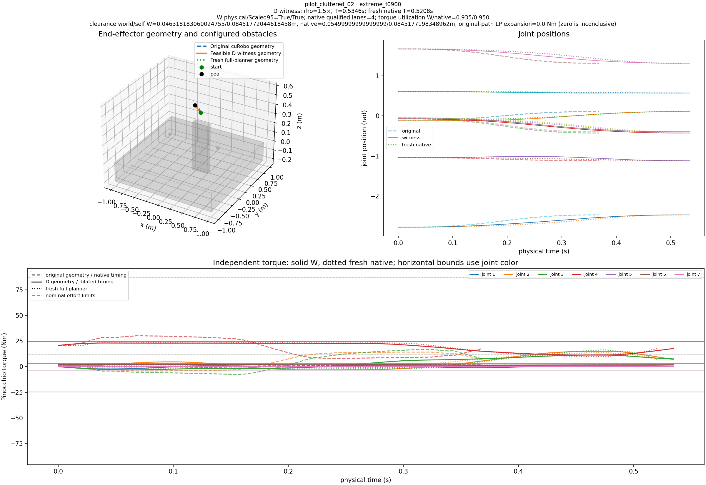

Qualification: only independently validated exact-quintic adaptive Scaled95 witnesses count. Native failure means no solution found in the preregistered finite restart budget; it does NOT prove all native geometries infeasible or any global optimality. Endpoint- infeasible profiles, missing restarts, planner runtime errors and native unverified successes are all separate categories. Analytic sphere collision and sampled Pinocchio checks are not continuous-time certificates.
The frozen design contains 20 severe-stress source tasks and eight uniform asymmetric-limit derating factors (1.000, 0.950, 0.900, 0.850, 0.800, 0.750, 0.700, 0.650): 160 task/factor cells. The endpoint-gravity reserve admitted only the cells counted above; rejected cells are not planner failures. Each admitted alternative used its frozen D geometry and the shortest registered slowdown passing the Scaled95 screen, then passed independent Pinocchio and adaptive sampled checks. A fresh full cuRobo planner was constructed with the same derated effort bounds. One restart, containing four internal TrajOpt lanes, found valid trajectories for every admitted cell. Higher restart budgets were therefore not escalated: this experiment did not observe finite-budget search failure.
The relaxed pointwise torque LP completed for both the original native cubic curve and D quintic in every admitted cell (257 path samples). Its required bound expansion was zero throughout. Zero is inconclusive: it does not prove a timing law exists, but it also provides no evidence that the original geometry is torque-infeasible under every timing law. Accordingly, no strong geometric-failure example is supported.
The original severe-stress native controls passed for pilot_free_00, pilot_table_00 and pilot_cluttered_03. The all-task f=1.000 control also returned native successes. The finite-budget result is thus a negative finding for this preregistered adversarial grid, not evidence that torque-aware geometry cannot help in other problems.
This verified cluttered example is deliberately labeled as a counterexample to the hoped-for failure: the fresh native planner succeeded and the original-path relaxed LP had zero required expansion.

| Arm | Derating factor | Attempts | Endpoint admitted | Endpoint rejected | W physical + Scaled95 | Native physical lanes | Native Scaled95 lanes | Native lane candidates | Positive original LP |
|---|---|---|---|---|---|---|---|---|---|
| extreme_f0650 | 0.65 | 20 | 1 | 19 | 1 | 4 | 4 | 4 | 0 |
| extreme_f0700 | 0.7 | 20 | 3 | 17 | 3 | 12 | 12 | 12 | 0 |
| extreme_f0750 | 0.75 | 20 | 4 | 16 | 4 | 16 | 16 | 16 | 0 |
| extreme_f0800 | 0.8 | 20 | 4 | 16 | 4 | 16 | 16 | 16 | 0 |
| extreme_f0850 | 0.85 | 20 | 4 | 16 | 4 | 16 | 16 | 16 | 0 |
| extreme_f0900 | 0.9 | 20 | 7 | 13 | 7 | 28 | 24 | 28 | 0 |
| extreme_f0950 | 0.95 | 20 | 11 | 9 | 11 | 44 | 44 | 44 | 0 |
| extreme_f1000 | 1.0 | 20 | 20 | 0 | 20 | 80 | 72 | 80 | 0 |
All 54 admitted native challenges completed one registered independent restart (four internal candidate lanes). The 216 retained lanes collapsed to one arc-aligned path for most task/factor cells; the maximum observed was two geometrically distinct paths among four lanes at a 1e-4 rad clustering tolerance. The complete per-cell counts and pairwise deviations are stored in each geometry_diversity.json.
| Case | Torque regime | Endpoint admitted | Independent witness | Witness slowdown | W duration (s) | Native primary duration (s) | Verified native candidates | Distinct native curves | Failed restarts | Original-path minimum LP expansion (Nm) | Decision |
|---|---|---|---|---|---|---|---|---|---|---|---|
| pilot_free_00 | extreme_f0650 | no | no | N/A | None | N/A | N/A | N/A | N/A | N/A | ENDPOINT_STATIC_GRAVITY_REJECTED |
| pilot_free_01 | extreme_f0650 | no | no | N/A | None | N/A | N/A | N/A | N/A | N/A | ENDPOINT_STATIC_GRAVITY_REJECTED |
| pilot_free_02 | extreme_f0650 | yes | yes | 2.0 | 0.9841449364912902 | 0.6798388361930847 | 4 | 1 | 0 | 0.0 | NATIVE_FOUND_FEASIBLE_TRAJECTORY |
| pilot_free_03 | extreme_f0650 | no | no | N/A | None | N/A | N/A | N/A | N/A | N/A | ENDPOINT_STATIC_GRAVITY_REJECTED |
| pilot_free_04 | extreme_f0650 | no | no | N/A | None | N/A | N/A | N/A | N/A | N/A | ENDPOINT_STATIC_GRAVITY_REJECTED |
| pilot_free_05 | extreme_f0650 | no | no | N/A | None | N/A | N/A | N/A | N/A | N/A | ENDPOINT_STATIC_GRAVITY_REJECTED |
| pilot_table_00 | extreme_f0650 | no | no | N/A | None | N/A | N/A | N/A | N/A | N/A | ENDPOINT_STATIC_GRAVITY_REJECTED |
| pilot_table_01 | extreme_f0650 | no | no | N/A | None | N/A | N/A | N/A | N/A | N/A | ENDPOINT_STATIC_GRAVITY_REJECTED |
| pilot_table_02 | extreme_f0650 | no | no | N/A | None | N/A | N/A | N/A | N/A | N/A | ENDPOINT_STATIC_GRAVITY_REJECTED |
| pilot_table_03 | extreme_f0650 | no | no | N/A | None | N/A | N/A | N/A | N/A | N/A | ENDPOINT_STATIC_GRAVITY_REJECTED |
| pilot_table_04 | extreme_f0650 | no | no | N/A | None | N/A | N/A | N/A | N/A | N/A | ENDPOINT_STATIC_GRAVITY_REJECTED |
| pilot_table_05 | extreme_f0650 | no | no | N/A | None | N/A | N/A | N/A | N/A | N/A | ENDPOINT_STATIC_GRAVITY_REJECTED |
| pilot_table_06 | extreme_f0650 | no | no | N/A | None | N/A | N/A | N/A | N/A | N/A | ENDPOINT_STATIC_GRAVITY_REJECTED |
| pilot_table_07 | extreme_f0650 | no | no | N/A | None | N/A | N/A | N/A | N/A | N/A | ENDPOINT_STATIC_GRAVITY_REJECTED |
| pilot_cluttered_00 | extreme_f0650 | no | no | N/A | None | N/A | N/A | N/A | N/A | N/A | ENDPOINT_STATIC_GRAVITY_REJECTED |
| pilot_cluttered_01 | extreme_f0650 | no | no | N/A | None | N/A | N/A | N/A | N/A | N/A | ENDPOINT_STATIC_GRAVITY_REJECTED |
| pilot_cluttered_02 | extreme_f0650 | no | no | N/A | None | N/A | N/A | N/A | N/A | N/A | ENDPOINT_STATIC_GRAVITY_REJECTED |
| pilot_cluttered_03 | extreme_f0650 | no | no | N/A | None | N/A | N/A | N/A | N/A | N/A | ENDPOINT_STATIC_GRAVITY_REJECTED |
| pilot_cluttered_04 | extreme_f0650 | no | no | N/A | None | N/A | N/A | N/A | N/A | N/A | ENDPOINT_STATIC_GRAVITY_REJECTED |
| pilot_cluttered_05 | extreme_f0650 | no | no | N/A | None | N/A | N/A | N/A | N/A | N/A | ENDPOINT_STATIC_GRAVITY_REJECTED |
| pilot_free_00 | extreme_f0700 | no | no | N/A | None | N/A | N/A | N/A | N/A | N/A | ENDPOINT_STATIC_GRAVITY_REJECTED |
| pilot_free_01 | extreme_f0700 | no | no | N/A | None | N/A | N/A | N/A | N/A | N/A | ENDPOINT_STATIC_GRAVITY_REJECTED |
| pilot_free_02 | extreme_f0700 | yes | yes | 1.75 | 0.8611268194298789 | 0.6254631280899048 | 4 | 1 | 0 | 0.0 | NATIVE_FOUND_FEASIBLE_TRAJECTORY |
| pilot_free_03 | extreme_f0700 | yes | yes | 2.0 | 1.123999113468526 | 1.1537539958953857 | 4 | 1 | 0 | 0.0 | NATIVE_FOUND_FEASIBLE_TRAJECTORY |
| pilot_free_04 | extreme_f0700 | no | no | N/A | None | N/A | N/A | N/A | N/A | N/A | ENDPOINT_STATIC_GRAVITY_REJECTED |
| pilot_free_05 | extreme_f0700 | no | no | N/A | None | N/A | N/A | N/A | N/A | N/A | ENDPOINT_STATIC_GRAVITY_REJECTED |
| pilot_table_00 | extreme_f0700 | no | no | N/A | None | N/A | N/A | N/A | N/A | N/A | ENDPOINT_STATIC_GRAVITY_REJECTED |
| pilot_table_01 | extreme_f0700 | no | no | N/A | None | N/A | N/A | N/A | N/A | N/A | ENDPOINT_STATIC_GRAVITY_REJECTED |
| pilot_table_02 | extreme_f0700 | no | no | N/A | None | N/A | N/A | N/A | N/A | N/A | ENDPOINT_STATIC_GRAVITY_REJECTED |
| pilot_table_03 | extreme_f0700 | no | no | N/A | None | N/A | N/A | N/A | N/A | N/A | ENDPOINT_STATIC_GRAVITY_REJECTED |
| pilot_table_04 | extreme_f0700 | yes | yes | 2.0 | 0.9113889139036213 | 0.7379079461097717 | 4 | 1 | 0 | 0.0 | NATIVE_FOUND_FEASIBLE_TRAJECTORY |
| pilot_table_05 | extreme_f0700 | no | no | N/A | None | N/A | N/A | N/A | N/A | N/A | ENDPOINT_STATIC_GRAVITY_REJECTED |
| pilot_table_06 | extreme_f0700 | no | no | N/A | None | N/A | N/A | N/A | N/A | N/A | ENDPOINT_STATIC_GRAVITY_REJECTED |
| pilot_table_07 | extreme_f0700 | no | no | N/A | None | N/A | N/A | N/A | N/A | N/A | ENDPOINT_STATIC_GRAVITY_REJECTED |
| pilot_cluttered_00 | extreme_f0700 | no | no | N/A | None | N/A | N/A | N/A | N/A | N/A | ENDPOINT_STATIC_GRAVITY_REJECTED |
| pilot_cluttered_01 | extreme_f0700 | no | no | N/A | None | N/A | N/A | N/A | N/A | N/A | ENDPOINT_STATIC_GRAVITY_REJECTED |
| pilot_cluttered_02 | extreme_f0700 | no | no | N/A | None | N/A | N/A | N/A | N/A | N/A | ENDPOINT_STATIC_GRAVITY_REJECTED |
| pilot_cluttered_03 | extreme_f0700 | no | no | N/A | None | N/A | N/A | N/A | N/A | N/A | ENDPOINT_STATIC_GRAVITY_REJECTED |
| pilot_cluttered_04 | extreme_f0700 | no | no | N/A | None | N/A | N/A | N/A | N/A | N/A | ENDPOINT_STATIC_GRAVITY_REJECTED |
| pilot_cluttered_05 | extreme_f0700 | no | no | N/A | None | N/A | N/A | N/A | N/A | N/A | ENDPOINT_STATIC_GRAVITY_REJECTED |
| pilot_free_00 | extreme_f0750 | no | no | N/A | None | N/A | N/A | N/A | N/A | N/A | ENDPOINT_STATIC_GRAVITY_REJECTED |
| pilot_free_01 | extreme_f0750 | no | no | N/A | None | N/A | N/A | N/A | N/A | N/A | ENDPOINT_STATIC_GRAVITY_REJECTED |
| pilot_free_02 | extreme_f0750 | yes | yes | 1.5 | 0.7381087023684676 | 0.6060791015625 | 4 | 1 | 0 | 0.0 | NATIVE_FOUND_FEASIBLE_TRAJECTORY |
| pilot_free_03 | extreme_f0750 | yes | yes | 1.75 | 0.9834992242849603 | 0.8759084343910217 | 4 | 1 | 0 | 0.0 | NATIVE_FOUND_FEASIBLE_TRAJECTORY |
| pilot_free_04 | extreme_f0750 | no | no | N/A | None | N/A | N/A | N/A | N/A | N/A | ENDPOINT_STATIC_GRAVITY_REJECTED |
| pilot_free_05 | extreme_f0750 | no | no | N/A | None | N/A | N/A | N/A | N/A | N/A | ENDPOINT_STATIC_GRAVITY_REJECTED |
| pilot_table_00 | extreme_f0750 | no | no | N/A | None | N/A | N/A | N/A | N/A | N/A | ENDPOINT_STATIC_GRAVITY_REJECTED |
| pilot_table_01 | extreme_f0750 | no | no | N/A | None | N/A | N/A | N/A | N/A | N/A | ENDPOINT_STATIC_GRAVITY_REJECTED |
| pilot_table_02 | extreme_f0750 | no | no | N/A | None | N/A | N/A | N/A | N/A | N/A | ENDPOINT_STATIC_GRAVITY_REJECTED |
| pilot_table_03 | extreme_f0750 | no | no | N/A | None | N/A | N/A | N/A | N/A | N/A | ENDPOINT_STATIC_GRAVITY_REJECTED |
| pilot_table_04 | extreme_f0750 | yes | yes | 1.75 | 0.7974652996656686 | 0.7603267431259155 | 4 | 1 | 0 | 0.0 | NATIVE_FOUND_FEASIBLE_TRAJECTORY |
| pilot_table_05 | extreme_f0750 | no | no | N/A | None | N/A | N/A | N/A | N/A | N/A | ENDPOINT_STATIC_GRAVITY_REJECTED |
| pilot_table_06 | extreme_f0750 | yes | yes | 2.5 | 1.27877278590639 | 1.091097116470337 | 4 | 1 | 0 | 0.0 | NATIVE_FOUND_FEASIBLE_TRAJECTORY |
| pilot_table_07 | extreme_f0750 | no | no | N/A | None | N/A | N/A | N/A | N/A | N/A | ENDPOINT_STATIC_GRAVITY_REJECTED |
| pilot_cluttered_00 | extreme_f0750 | no | no | N/A | None | N/A | N/A | N/A | N/A | N/A | ENDPOINT_STATIC_GRAVITY_REJECTED |
| pilot_cluttered_01 | extreme_f0750 | no | no | N/A | None | N/A | N/A | N/A | N/A | N/A | ENDPOINT_STATIC_GRAVITY_REJECTED |
| pilot_cluttered_02 | extreme_f0750 | no | no | N/A | None | N/A | N/A | N/A | N/A | N/A | ENDPOINT_STATIC_GRAVITY_REJECTED |
| pilot_cluttered_03 | extreme_f0750 | no | no | N/A | None | N/A | N/A | N/A | N/A | N/A | ENDPOINT_STATIC_GRAVITY_REJECTED |
| pilot_cluttered_04 | extreme_f0750 | no | no | N/A | None | N/A | N/A | N/A | N/A | N/A | ENDPOINT_STATIC_GRAVITY_REJECTED |
| pilot_cluttered_05 | extreme_f0750 | no | no | N/A | None | N/A | N/A | N/A | N/A | N/A | ENDPOINT_STATIC_GRAVITY_REJECTED |
| pilot_free_00 | extreme_f0800 | no | no | N/A | None | N/A | N/A | N/A | N/A | N/A | ENDPOINT_STATIC_GRAVITY_REJECTED |
| pilot_free_01 | extreme_f0800 | no | no | N/A | None | N/A | N/A | N/A | N/A | N/A | ENDPOINT_STATIC_GRAVITY_REJECTED |
| pilot_free_02 | extreme_f0800 | yes | yes | 1.35 | 0.664297832131621 | 0.5705780386924744 | 4 | 1 | 0 | 0.0 | NATIVE_FOUND_FEASIBLE_TRAJECTORY |
| pilot_free_03 | extreme_f0800 | yes | yes | 1.5 | 0.8429993351013946 | 0.7266069054603577 | 4 | 1 | 0 | 0.0 | NATIVE_FOUND_FEASIBLE_TRAJECTORY |
| pilot_free_04 | extreme_f0800 | no | no | N/A | None | N/A | N/A | N/A | N/A | N/A | ENDPOINT_STATIC_GRAVITY_REJECTED |
| pilot_free_05 | extreme_f0800 | no | no | N/A | None | N/A | N/A | N/A | N/A | N/A | ENDPOINT_STATIC_GRAVITY_REJECTED |
| pilot_table_00 | extreme_f0800 | no | no | N/A | None | N/A | N/A | N/A | N/A | N/A | ENDPOINT_STATIC_GRAVITY_REJECTED |
| pilot_table_01 | extreme_f0800 | no | no | N/A | None | N/A | N/A | N/A | N/A | N/A | ENDPOINT_STATIC_GRAVITY_REJECTED |
| pilot_table_02 | extreme_f0800 | no | no | N/A | None | N/A | N/A | N/A | N/A | N/A | ENDPOINT_STATIC_GRAVITY_REJECTED |
| pilot_table_03 | extreme_f0800 | no | no | N/A | None | N/A | N/A | N/A | N/A | N/A | ENDPOINT_STATIC_GRAVITY_REJECTED |
| pilot_table_04 | extreme_f0800 | yes | yes | 1.5 | 0.683541685427716 | 0.5953164100646973 | 4 | 1 | 0 | 0.0 | NATIVE_FOUND_FEASIBLE_TRAJECTORY |
| pilot_table_05 | extreme_f0800 | no | no | N/A | None | N/A | N/A | N/A | N/A | N/A | ENDPOINT_STATIC_GRAVITY_REJECTED |
| pilot_table_06 | extreme_f0800 | yes | yes | 1.75 | 0.8951409501344729 | 0.8242272734642029 | 4 | 1 | 0 | 0.0 | NATIVE_FOUND_FEASIBLE_TRAJECTORY |
| pilot_table_07 | extreme_f0800 | no | no | N/A | None | N/A | N/A | N/A | N/A | N/A | ENDPOINT_STATIC_GRAVITY_REJECTED |
| pilot_cluttered_00 | extreme_f0800 | no | no | N/A | None | N/A | N/A | N/A | N/A | N/A | ENDPOINT_STATIC_GRAVITY_REJECTED |
| pilot_cluttered_01 | extreme_f0800 | no | no | N/A | None | N/A | N/A | N/A | N/A | N/A | ENDPOINT_STATIC_GRAVITY_REJECTED |
| pilot_cluttered_02 | extreme_f0800 | no | no | N/A | None | N/A | N/A | N/A | N/A | N/A | ENDPOINT_STATIC_GRAVITY_REJECTED |
| pilot_cluttered_03 | extreme_f0800 | no | no | N/A | None | N/A | N/A | N/A | N/A | N/A | ENDPOINT_STATIC_GRAVITY_REJECTED |
| pilot_cluttered_04 | extreme_f0800 | no | no | N/A | None | N/A | N/A | N/A | N/A | N/A | ENDPOINT_STATIC_GRAVITY_REJECTED |
| pilot_cluttered_05 | extreme_f0800 | no | no | N/A | None | N/A | N/A | N/A | N/A | N/A | ENDPOINT_STATIC_GRAVITY_REJECTED |
| pilot_free_00 | extreme_f0850 | no | no | N/A | None | N/A | N/A | N/A | N/A | N/A | ENDPOINT_STATIC_GRAVITY_REJECTED |
| pilot_free_01 | extreme_f0850 | no | no | N/A | None | N/A | N/A | N/A | N/A | N/A | ENDPOINT_STATIC_GRAVITY_REJECTED |
| pilot_free_02 | extreme_f0850 | yes | yes | 1.2 | 0.5904869618947741 | 0.5589835047721863 | 4 | 1 | 0 | 0.0 | NATIVE_FOUND_FEASIBLE_TRAJECTORY |
| pilot_free_03 | extreme_f0850 | yes | yes | 1.35 | 0.7586994015912552 | 0.7035669088363647 | 4 | 1 | 0 | 0.0 | NATIVE_FOUND_FEASIBLE_TRAJECTORY |
| pilot_free_04 | extreme_f0850 | no | no | N/A | None | N/A | N/A | N/A | N/A | N/A | ENDPOINT_STATIC_GRAVITY_REJECTED |
| pilot_free_05 | extreme_f0850 | no | no | N/A | None | N/A | N/A | N/A | N/A | N/A | ENDPOINT_STATIC_GRAVITY_REJECTED |
| pilot_table_00 | extreme_f0850 | no | no | N/A | None | N/A | N/A | N/A | N/A | N/A | ENDPOINT_STATIC_GRAVITY_REJECTED |
| pilot_table_01 | extreme_f0850 | no | no | N/A | None | N/A | N/A | N/A | N/A | N/A | ENDPOINT_STATIC_GRAVITY_REJECTED |
| pilot_table_02 | extreme_f0850 | no | no | N/A | None | N/A | N/A | N/A | N/A | N/A | ENDPOINT_STATIC_GRAVITY_REJECTED |
| pilot_table_03 | extreme_f0850 | no | no | N/A | None | N/A | N/A | N/A | N/A | N/A | ENDPOINT_STATIC_GRAVITY_REJECTED |
| pilot_table_04 | extreme_f0850 | yes | yes | 1.35 | 0.6151875168849444 | 0.5541250109672546 | 4 | 1 | 0 | 0.0 | NATIVE_FOUND_FEASIBLE_TRAJECTORY |
| pilot_table_05 | extreme_f0850 | no | no | N/A | None | N/A | N/A | N/A | N/A | N/A | ENDPOINT_STATIC_GRAVITY_REJECTED |
| pilot_table_06 | extreme_f0850 | yes | yes | 1.5 | 0.7672636715438339 | 0.720473051071167 | 4 | 1 | 0 | 0.0 | NATIVE_FOUND_FEASIBLE_TRAJECTORY |
| pilot_table_07 | extreme_f0850 | no | no | N/A | None | N/A | N/A | N/A | N/A | N/A | ENDPOINT_STATIC_GRAVITY_REJECTED |
| pilot_cluttered_00 | extreme_f0850 | no | no | N/A | None | N/A | N/A | N/A | N/A | N/A | ENDPOINT_STATIC_GRAVITY_REJECTED |
| pilot_cluttered_01 | extreme_f0850 | no | no | N/A | None | N/A | N/A | N/A | N/A | N/A | ENDPOINT_STATIC_GRAVITY_REJECTED |
| pilot_cluttered_02 | extreme_f0850 | no | no | N/A | None | N/A | N/A | N/A | N/A | N/A | ENDPOINT_STATIC_GRAVITY_REJECTED |
| pilot_cluttered_03 | extreme_f0850 | no | no | N/A | None | N/A | N/A | N/A | N/A | N/A | ENDPOINT_STATIC_GRAVITY_REJECTED |
| pilot_cluttered_04 | extreme_f0850 | no | no | N/A | None | N/A | N/A | N/A | N/A | N/A | ENDPOINT_STATIC_GRAVITY_REJECTED |
| pilot_cluttered_05 | extreme_f0850 | no | no | N/A | None | N/A | N/A | N/A | N/A | N/A | ENDPOINT_STATIC_GRAVITY_REJECTED |
| pilot_free_00 | extreme_f0900 | no | no | N/A | None | N/A | N/A | N/A | N/A | N/A | ENDPOINT_STATIC_GRAVITY_REJECTED |
| pilot_free_01 | extreme_f0900 | yes | yes | 1.5 | 0.728645037986163 | 0.8107476234436035 | 4 | 1 | 0 | 0.0 | NATIVE_FOUND_FEASIBLE_TRAJECTORY |
| pilot_free_02 | extreme_f0900 | yes | yes | 1.2 | 0.5904869618947741 | 0.5528536438941956 | 4 | 1 | 0 | 0.0 | NATIVE_FOUND_FEASIBLE_TRAJECTORY |
| pilot_free_03 | extreme_f0900 | yes | yes | 1.2 | 0.6743994680811156 | 0.67118901014328 | 4 | 1 | 0 | 0.0 | NATIVE_FOUND_FEASIBLE_TRAJECTORY |
| pilot_free_04 | extreme_f0900 | no | no | N/A | None | N/A | N/A | N/A | N/A | N/A | ENDPOINT_STATIC_GRAVITY_REJECTED |
| pilot_free_05 | extreme_f0900 | no | no | N/A | None | N/A | N/A | N/A | N/A | N/A | ENDPOINT_STATIC_GRAVITY_REJECTED |
| pilot_table_00 | extreme_f0900 | no | no | N/A | None | N/A | N/A | N/A | N/A | N/A | ENDPOINT_STATIC_GRAVITY_REJECTED |
| pilot_table_01 | extreme_f0900 | no | no | N/A | None | N/A | N/A | N/A | N/A | N/A | ENDPOINT_STATIC_GRAVITY_REJECTED |
| pilot_table_02 | extreme_f0900 | no | no | N/A | None | N/A | N/A | N/A | N/A | N/A | ENDPOINT_STATIC_GRAVITY_REJECTED |
| pilot_table_03 | extreme_f0900 | no | no | N/A | None | N/A | N/A | N/A | N/A | N/A | ENDPOINT_STATIC_GRAVITY_REJECTED |
| pilot_table_04 | extreme_f0900 | yes | yes | 1.2 | 0.5468333483421728 | 0.5202308297157288 | 4 | 1 | 0 | 0.0 | NATIVE_FOUND_FEASIBLE_TRAJECTORY |
| pilot_table_05 | extreme_f0900 | no | no | N/A | None | N/A | N/A | N/A | N/A | N/A | ENDPOINT_STATIC_GRAVITY_REJECTED |
| pilot_table_06 | extreme_f0900 | yes | yes | 1.35 | 0.6905373043894506 | 0.626896321773529 | 4 | 1 | 0 | 0.0 | NATIVE_FOUND_FEASIBLE_TRAJECTORY |
| pilot_table_07 | extreme_f0900 | no | no | N/A | None | N/A | N/A | N/A | N/A | N/A | ENDPOINT_STATIC_GRAVITY_REJECTED |
| pilot_cluttered_00 | extreme_f0900 | no | no | N/A | None | N/A | N/A | N/A | N/A | N/A | ENDPOINT_STATIC_GRAVITY_REJECTED |
| pilot_cluttered_01 | extreme_f0900 | no | no | N/A | None | N/A | N/A | N/A | N/A | N/A | ENDPOINT_STATIC_GRAVITY_REJECTED |
| pilot_cluttered_02 | extreme_f0900 | yes | yes | 1.5 | 0.5346011128605628 | 0.5208002328872681 | 4 | 1 | 0 | 0.0 | NATIVE_FOUND_FEASIBLE_TRAJECTORY |
| pilot_cluttered_03 | extreme_f0900 | no | no | N/A | None | N/A | N/A | N/A | N/A | N/A | ENDPOINT_STATIC_GRAVITY_REJECTED |
| pilot_cluttered_04 | extreme_f0900 | no | no | N/A | None | N/A | N/A | N/A | N/A | N/A | ENDPOINT_STATIC_GRAVITY_REJECTED |
| pilot_cluttered_05 | extreme_f0900 | yes | yes | 3.0 | 1.6705943474086409 | 1.0781816244125366 | 4 | 1 | 0 | 0.0 | NATIVE_FOUND_FEASIBLE_TRAJECTORY |
| pilot_free_00 | extreme_f0950 | yes | yes | 1.2 | 0.5336542433361816 | 0.5462194085121155 | 4 | 1 | 0 | 0.0 | NATIVE_FOUND_FEASIBLE_TRAJECTORY |
| pilot_free_01 | extreme_f0950 | yes | yes | 1.2 | 0.5829160303889304 | 0.6363351941108704 | 4 | 1 | 0 | 0.0 | NATIVE_FOUND_FEASIBLE_TRAJECTORY |
| pilot_free_02 | extreme_f0950 | yes | yes | 1.1 | 0.5412797150702097 | 0.5457903146743774 | 4 | 1 | 0 | 0.0 | NATIVE_FOUND_FEASIBLE_TRAJECTORY |
| pilot_free_03 | extreme_f0950 | yes | yes | 1.1 | 0.6181995124076894 | 0.632321834564209 | 4 | 1 | 0 | 0.0 | NATIVE_FOUND_FEASIBLE_TRAJECTORY |
| pilot_free_04 | extreme_f0950 | no | no | N/A | None | N/A | N/A | N/A | N/A | N/A | ENDPOINT_STATIC_GRAVITY_REJECTED |
| pilot_free_05 | extreme_f0950 | no | no | N/A | None | N/A | N/A | N/A | N/A | N/A | ENDPOINT_STATIC_GRAVITY_REJECTED |
| pilot_table_00 | extreme_f0950 | no | no | N/A | None | N/A | N/A | N/A | N/A | N/A | ENDPOINT_STATIC_GRAVITY_REJECTED |
| pilot_table_01 | extreme_f0950 | yes | yes | 1.2 | 0.4675799644998453 | 0.47463226318359375 | 4 | 1 | 0 | 0.0 | NATIVE_FOUND_FEASIBLE_TRAJECTORY |
| pilot_table_02 | extreme_f0950 | yes | yes | 1.2 | 0.7344628764835536 | 0.751766562461853 | 4 | 1 | 0 | 0.0 | NATIVE_FOUND_FEASIBLE_TRAJECTORY |
| pilot_table_03 | extreme_f0950 | yes | yes | 1.2 | 0.6372609606119163 | 0.6793374419212341 | 4 | 2 | 0 | 0.0 | NATIVE_FOUND_FEASIBLE_TRAJECTORY |
| pilot_table_04 | extreme_f0950 | yes | yes | 1.1 | 0.5012639026469917 | 0.5185946226119995 | 4 | 1 | 0 | 0.0 | NATIVE_FOUND_FEASIBLE_TRAJECTORY |
| pilot_table_05 | extreme_f0950 | no | no | N/A | None | N/A | N/A | N/A | N/A | N/A | ENDPOINT_STATIC_GRAVITY_REJECTED |
| pilot_table_06 | extreme_f0950 | yes | yes | 1.1 | 0.5626600257988116 | 0.592436671257019 | 4 | 1 | 0 | 0.0 | NATIVE_FOUND_FEASIBLE_TRAJECTORY |
| pilot_table_07 | extreme_f0950 | no | no | N/A | None | N/A | N/A | N/A | N/A | N/A | ENDPOINT_STATIC_GRAVITY_REJECTED |
| pilot_cluttered_00 | extreme_f0950 | no | no | N/A | None | N/A | N/A | N/A | N/A | N/A | ENDPOINT_STATIC_GRAVITY_REJECTED |
| pilot_cluttered_01 | extreme_f0950 | no | no | N/A | None | N/A | N/A | N/A | N/A | N/A | ENDPOINT_STATIC_GRAVITY_REJECTED |
| pilot_cluttered_02 | extreme_f0950 | yes | yes | 1.2 | 0.4276808902884502 | 0.44202932715415955 | 4 | 1 | 0 | 0.0 | NATIVE_FOUND_FEASIBLE_TRAJECTORY |
| pilot_cluttered_03 | extreme_f0950 | no | no | N/A | None | N/A | N/A | N/A | N/A | N/A | ENDPOINT_STATIC_GRAVITY_REJECTED |
| pilot_cluttered_04 | extreme_f0950 | no | no | N/A | None | N/A | N/A | N/A | N/A | N/A | ENDPOINT_STATIC_GRAVITY_REJECTED |
| pilot_cluttered_05 | extreme_f0950 | yes | yes | 1.35 | 0.7517674563338884 | 0.802783727645874 | 4 | 1 | 0 | 0.0 | NATIVE_FOUND_FEASIBLE_TRAJECTORY |
| pilot_free_00 | extreme_f1000 | yes | yes | 1.05 | 0.466947462919159 | 0.5106839537620544 | 4 | 1 | 0 | 0.0 | NATIVE_FOUND_FEASIBLE_TRAJECTORY |
| pilot_free_01 | extreme_f1000 | yes | yes | 1.05 | 0.510051526590314 | 0.5620995759963989 | 4 | 1 | 0 | 0.0 | NATIVE_FOUND_FEASIBLE_TRAJECTORY |
| pilot_free_02 | extreme_f1000 | yes | yes | 1.05 | 0.5166760916579274 | 0.5181999802589417 | 4 | 1 | 0 | 0.0 | NATIVE_FOUND_FEASIBLE_TRAJECTORY |
| pilot_free_03 | extreme_f1000 | yes | yes | 1.05 | 0.5900995345709762 | 0.5949260592460632 | 4 | 1 | 0 | 0.0 | NATIVE_FOUND_FEASIBLE_TRAJECTORY |
| pilot_free_04 | extreme_f1000 | yes | yes | 1.05 | 0.5130925779758724 | 0.5214890837669373 | 4 | 1 | 0 | 0.0 | NATIVE_FOUND_FEASIBLE_TRAJECTORY |
| pilot_free_05 | extreme_f1000 | yes | yes | 1.05 | 0.494132965840642 | 0.49757277965545654 | 4 | 1 | 0 | 0.0 | NATIVE_FOUND_FEASIBLE_TRAJECTORY |
| pilot_table_00 | extreme_f1000 | yes | yes | 1.05 | 0.5714988070944425 | 0.6580215096473694 | 4 | 1 | 0 | 0.0 | NATIVE_FOUND_FEASIBLE_TRAJECTORY |
| pilot_table_01 | extreme_f1000 | yes | yes | 1.05 | 0.40913246893736466 | 0.45037642121315 | 4 | 1 | 0 | 0.0 | NATIVE_FOUND_FEASIBLE_TRAJECTORY |
| pilot_table_02 | extreme_f1000 | yes | yes | 1.05 | 0.6426550169231094 | 0.6817600131034851 | 4 | 1 | 0 | 0.0 | NATIVE_FOUND_FEASIBLE_TRAJECTORY |
| pilot_table_03 | extreme_f1000 | yes | yes | 1.05 | 0.5576033405354268 | 0.6129555702209473 | 4 | 2 | 0 | 0.0 | NATIVE_FOUND_FEASIBLE_TRAJECTORY |
| pilot_table_04 | extreme_f1000 | yes | yes | 1.05 | 0.4784791797994012 | 0.5012912154197693 | 4 | 1 | 0 | 0.0 | NATIVE_FOUND_FEASIBLE_TRAJECTORY |
| pilot_table_05 | extreme_f1000 | yes | yes | 1.05 | 0.45793573435749885 | 0.4574279487133026 | 4 | 1 | 0 | 0.0 | NATIVE_FOUND_FEASIBLE_TRAJECTORY |
| pilot_table_06 | extreme_f1000 | yes | yes | 1.05 | 0.5370845700806838 | 0.5806789398193359 | 4 | 1 | 0 | 0.0 | NATIVE_FOUND_FEASIBLE_TRAJECTORY |
| pilot_table_07 | extreme_f1000 | yes | yes | 1.05 | 0.6164068382740163 | 0.5997088551521301 | 4 | 1 | 0 | 0.0 | NATIVE_FOUND_FEASIBLE_TRAJECTORY |
| pilot_cluttered_00 | extreme_f1000 | yes | yes | 1.2 | 0.7012406701307681 | 0.6162341237068176 | 4 | 1 | 0 | 0.0 | NATIVE_FOUND_FEASIBLE_TRAJECTORY |
| pilot_cluttered_01 | extreme_f1000 | yes | yes | 1.05 | 0.575955644665945 | 0.5908893942832947 | 4 | 2 | 0 | 0.0 | NATIVE_FOUND_FEASIBLE_TRAJECTORY |
| pilot_cluttered_02 | extreme_f1000 | yes | yes | 1.05 | 0.374220779002394 | 0.40833163261413574 | 4 | 1 | 0 | 0.0 | NATIVE_FOUND_FEASIBLE_TRAJECTORY |
| pilot_cluttered_03 | extreme_f1000 | yes | yes | 1.05 | 0.5806831620660172 | 0.7558120489120483 | 4 | 1 | 0 | 0.0 | NATIVE_FOUND_FEASIBLE_TRAJECTORY |
| pilot_cluttered_04 | extreme_f1000 | yes | yes | 1.05 | 0.5081254038292918 | 0.5337421298027039 | 4 | 1 | 0 | 0.0 | NATIVE_FOUND_FEASIBLE_TRAJECTORY |
| pilot_cluttered_05 | extreme_f1000 | yes | yes | 1.05 | 0.5847080215930244 | 0.6696703433990479 | 4 | 1 | 0 | 0.0 | NATIVE_FOUND_FEASIBLE_TRAJECTORY |
initial_prep_failed_attempts.json, then preparation was rerun after correction.Across 54 successful one-restart calls on NVIDIA A100-PCIE-40GB, NVIDIA GeForce RTX 3090, native planning-call wall time had median 0.2048 s (range 0.1626–0.231 s). Model construction and warmup were timed separately (median 1.8 s) and excluded. Offline witness preparation and independent validation are not included in these native planner call times.
Preregistration manifest: /home/pkicki/curobo/research/joint_time_oracle/results/extreme_torque_witness_20261108/manifest.json. The raw output directory contains per-factor source task/profile hashes, witness trajectories, native lane buffers, dense and adaptive Pinocchio audits, LP evidence, restart histories, and receipts. See the repository's raw-result checksum inventory for exact file hashes.
Machine-readable case summary and per-trajectory source checksums · Full raw-artifact SHA256 inventory · Frozen run environment and timing boundary
{
"ENDPOINT_STATIC_GRAVITY_REJECTED": 106,
"NATIVE_FOUND_FEASIBLE_TRAJECTORY": 54
}